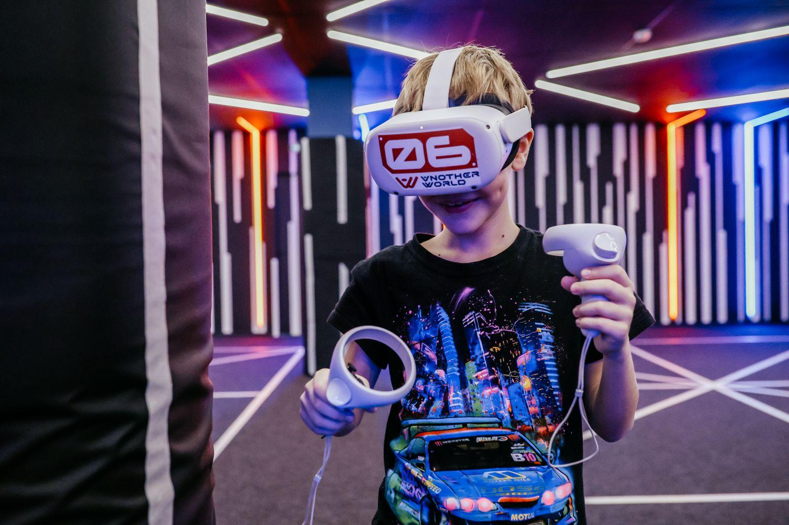
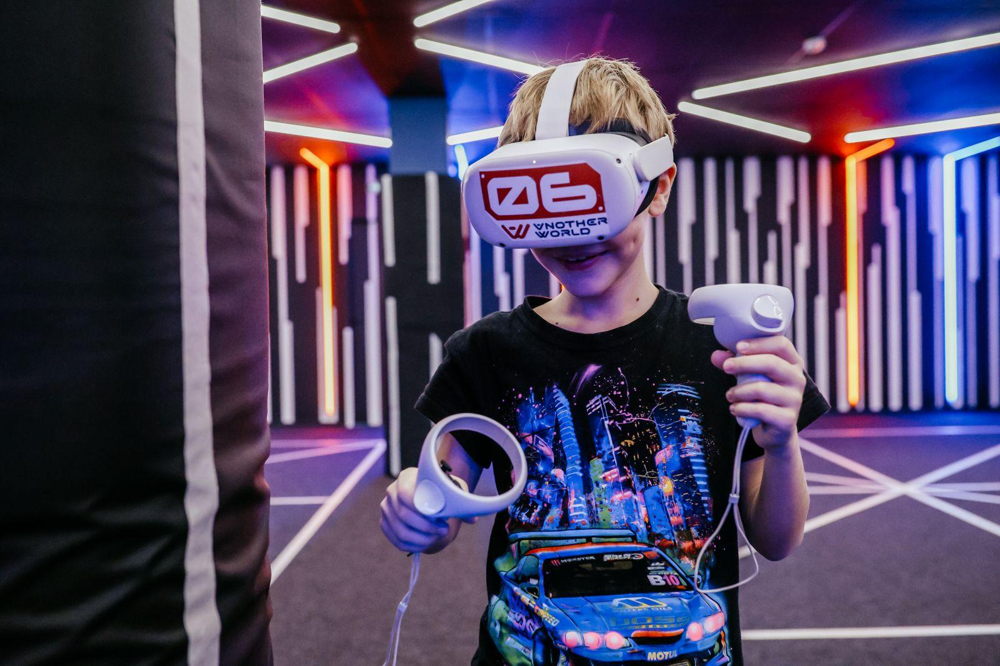

В чём феномен квест-индустрии?
Погружение в атмосферу — ключевой элемент квеста, который заставляет забыть о реальности
Что такое квесты и почему они популярны?
 

Разнообразие форматов: от классических головоломок до детских праздников и высокотехнологичных VR-квестов
Незаметным образом квест-индустрия проникла в жизнь людей и стала одним из самых интересных способов провести выходной день в компании друзей. Квесты — это интерактивные игры с различными сюжетами: от хорроров, до детективов. Главная цель любого сеанса — решить все головоломки на пути к цели, которая так же везде может быть разной в зависимости от классификации. Где-то — выбраться из комнаты, где-то — найти сокровища, а где-то — разгадать главную загадку, лежащую в основе всей игры.
Теперь родители с детьми, подростки и молодые люди ходят на квесты, чтобы весело провести время и зарядиться самыми разными эмоциями, как когда-то посещали парки аттракционов. Но так ли популярен такой досуг в Нижнем Новгороде и может ли они действительно конкурировать за внимание посетителей с более традиционными видами отдыха?
Чтобы ответить на эти вопросы мы взяли три квест-компании Нижнего Новгорода:
- «Пятый угол» — самая крупная компания в регионе и абсолютный лидер индустрии. Точки квестов расположены не только в Нижнем Новгороде, но и в Дзержинске.
- «Level Up» — маленькая и самобытная компания, которой за счёт креатива и оригинального подхода удаётся конкурировать с лидерами индустрии.
- «Горький Quest» — компания со своим взглядом на продукт, который отличается от конкурентов. С каждым из участников проводится серьезная индивидуальная работа и деталь.
Пятый угол. Люди хотят пугаться?


Два самых популярных запроса: хоррор-квесты для любителей адреналина и детские дни рождения для семейного отдыха
«Пятый угол» преодолел внушительный путь — менее чем за девять лет существования компания выросла в лидера рынка, распространяя свой продукт за границы Нижнего Новгорода. Организация зашла в индустрию в 2016 году и сейчас имеет 17 точек в большинстве районов города. Посетители могут выбрать более, чем из пятидесяти различных программ: страшные, нестрашные, классические, иммерсивные или экшн-игры. К тому же направлены они на группы разного количества людей — можно выбрать для двоих, а можно найти квест и для шестидесяти человек.
Ключевая особенность компании не только в масштабе, но и в универсальности — «Пятый угол» направлен на разную аудиторию: от детей, до взрослых. В арсенале развлечений есть и VR-комнаты, и организация корпоративов и тимбилдингов, и спокойные квесты для школьников.
Удивительно, но самые популярные запросы — это два прямо противоположных мероприятия. Первый — хоррор-квесты. Именно благодаря такого типа играм индустрия и прославилась. Люди хотят адреналина и добровольно соглашаются зайти в комнату, где неизбежно будет страшно. Все эти: «а есть что-нибудь прям жуткое?» звучат каждый день, — дополняет Анастасия.
Участники квестов хотят пугаться, поэтому запросов на спокойные, интеллектуальные форматы сейчас стало куда меньше.
Второй самый популярный вариант среди клиентов — детские дни рождения. Школьники приходят за эмоциями, весельем и «движухой». А родители за организацией на качественном уровне, где всё под контролем профессионалов. Но есть и подводные камни.
Уровень контакта в квестах – это степень физического взаимодействия актёров с игроками. Обычно выделают три режима:
1) Лайт – минимальный контакт, участника практически не касаются, только по сюжету.
2) Медиум – умеренный контакт, игрока могут напугать, но без болевых ощущений.
3) Хард – грубый контакт, актёр может хватать, удерживать, утаскивать игроков, применять болевые приёмы и использовать больше силы.
Особый акцент Настя делает на поддержке игроков от персонала: Мы всегда остаёмся с клиентом от начала и до конца: встречаем, успокаиваем, подбадриваем, подстраиваемся. Люди ценят, когда их эмоции чувствуют и понимают.
Если говорить о проблемах в конкуренции с другими развлечениями, то Настя спокойно говорит: Да, проблемы есть. В последние годы рынок развлечений особенно расширился — VR-комнаты, компьютерные клубы распространяются всё активнее. У детей и подростков огромное количество вариантов для выбора. Но квесты всё ещё держат популярность. Людям нужен драйв, эмоции, живое участие. И мы даём им это, — заключает Настя.
Level Up. Как вернуть посетителя?

Квест-компания «Level Up» открылась в 2024 году. Очевидно, что она куда меньше — в городе лишь одна локация, да и выбор для гостей куда скромнее. Посетителю здесь могу предложить только пять программ.
Однако креатив — тот компонент, благодаря которому организация держит достойный уровень и имеет постоянных клиентов, что очень трудно в индустрии развлечений. Главный способ привлечения посетителей – ассоциация с известной игровой вселенной. Создатели использовали популярную компьютерную игру «Пять ночей Фредди», чтобы создать квест, который станет лицом компании. И у них это удалось.
В качестве основы «Level Up» взяли сюжет из игры, которая так нравится подросткам и поместили туда многим известных героев – аниматроников. С помощью узнаваемого образа клиенты стали не только приходить всё чаще, но и возвращаться. Чтобы разобраться, как выдерживает конкуренцию небольшая команда против огромных компаний, мы поговорили с одним из создателей «Level Up».
Фирменный мерч компании Level Up помогает создавать лояльную аудиторию и стимулирует возвращение клиентов
Такой подход сумел создать аудиторию, которая начала возвращаться. Пусть не через неделю, но люди стали предпочитать квесты «Level Up», более масштабным компаниям. С помощью этого организация приобрела собственную аудиторию, и теперь база посетителей только растёт. Команда разрабатывает антураж до мелочей — ребята закупают специальную мебель для определённых квестов и стараются максимально погрузить игроков в атмосферу сюжета.
Горький Quest. Как можно выделяться в квест-индустрии?


Иммерсивные квесты «Горький Quest»: детализированный антураж, профессиональные актёры и полное погружение в сюжет
Главная «фишка» компании «Горький Quest» — иммерсивность. Это эффект полного погружения человека в искусственно созданную среду. Каждый посетитель, приходящий на квест, вытягивает специальную карточку. На ней указана роль, в которой человек будет находиться на протяжении всей игры. Например, исследователь, журналист, священник или даже император. Другими словами, игроки в квесте не просто участники — они создатели сюжета, которые развивают ход действия так же, как и актёры. Не нужно путать с интерактивностью, потому что процесс намного сложнее, чем обычное взаимодействие с человеком и предоставление ему выбора.
В квесте можно выделить три ключевых фактора: антураж, звуки и актёр. Каждый из них должен работать не хуже среднего. «Горький Quest» особенный акцент делает на антураж. Человек моментально погружается в атмосферу, когда актёр его встречает, провожает в комнату, ведёт сам сюжет, и прощается в конце квеста, находясь постоянно в образе. Очень важно прямое взаимодействие с игроком.
Например, сюжет «Астрала» (репортаж оттуда вы читали в начале текста) во многом сосредоточен на индивидуальном контакта с человеком. В квесте может принимать участие до восьми человек — к каждому герою применяется свой подход и отдельная работа со стороны персонала квеста.
Кирилл проработал в квест-индустрии семь лет. Он основал собственную компанию, работал там актёром. Но совсем недавно принял решение завершить свой путь в этой сфере. Кирилл продал компанию и отошёл от дел. Причина простая — выгорание. За столько времени парень вложил в это дело не только эмоциональный ресурс, но и физический. Каждую игру необходимо было проживать через себя и это действительно нелегко. К тому же повторять так из раза в раз. Он возвращался домой, а чувств никаких уже не оставалось, потому что оставлял всё в тех комнатах с десятками игроков за день.
Творческое выгорание на квестах крайне сильно. И со мной это приключилось. Никогда не хотел фальши, не хотелось подводить кого-то. Да и ударить в грязь лицом — не самое лучше чувство для собственного ощущения. Поэтому всегда выкладывался на максимум и в конце концов эмоций на себя уже не хватало.

Эмоциональное истощение — частая цена за полное погружение в роль
По словам Кирилла, затем наступил второй момент, когда он осознал, что у него не хватает сил. Парень действительно загубил собственное здоровье, посвятив всего себя индустрии развлечений. В возрасте 16-20 лет актёры всегда энергичные и более выносливые. Но со временем он понял, что уже не справляется. В динамических квестах, где нужно бегать за игроками, прыгать по локации, ресурса уже не хватало.
Раньше мог проводить по семь таких игр подряд, а сейчас на третьей уже становилось плохо. К тому же у Кирилла сел голос. Он порвал узлы на связках, из-за огромного напряжения. Не всегда ведь в квестах актёры разговаривают спокойно, иногда и кричать нужно, и голос менять. Всё это оказывало огромное влияние на организм. В какой-то момент молодой человек понял, что пора заканчивать.
Да и вопрос финансов всегда в индустрии развлечений стоит особенно остро. А в квестах, по словам Кирилла, все ребята работали практически за идею, не получая особенно прибыли. Все проблемы сложились воедино, и он принял решение продать компанию.
В мире квестов, где эмоции и адреналин – главная валюта, большие компании вроде «Пятого угла» доминируют по масштабу: 17 локаций, 50+ программ, от хорроров для взрослых до детских праздников. Они предусматривают универсальность аудитории. Но именно маленькие, самобытные студии вроде «Level Up» и «Горький Квест» развивают индустрию благодаря креативным и смелым идеям. Они экспериментируют весьма удачно – мерч по играм, ролевые «иммерсивки», персональные сюжеты – и всё затянуто под интересы аудитории, которая ценит такой подход. Квест-индустрия растёт не за счет сетей, а благодаря таким «малышам», которые напоминают: истинный драйв рождается из креатива, а не из количества дверей.
Вы всё ещё уверены, что хотите выйти?
Команда проекта

Артём Кузнецов
Автор лонгрида

Никита Хренов
Верстальщик и дизайнер